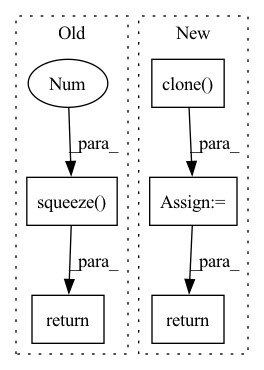

Pattern ID :34638

Before Change
x[:, 3, :, :] *= self.sc_y * self.buffer
x[:, 4, :, :] *= self.sc_z * self.buffer
return x.squeeze(0)
class InverseOffsetRescale(OffsetRescale):
def __init__(self, scale_x: float, scale_y: float, scale_z: float, scale_phot: float, buffer=1.):
After Change
else:
squeeze_before_return = False
x_ = x.clone()
x_[:, 1, :, :] *= self.sc_phot * self.buffer
x_[:, 2, :, :] *= self.sc_x * self.buffer
x_[:, 3, :, :] *= self.sc_y * self.buffer
x_[:, 4, :, :] *= self.sc_z * self.buffer
if squeeze_before_return:
return x_.squeeze(0)
else:
return x_
class InverseOffsetRescale(OffsetRescale):
In pattern: SUPERPATTERN
Frequency: 3
Non-data size: 5
Instances
Fragment ID: 99520446
Project Name: turagalab/decode
Commit Name: 0ae804812c956cfa1d9566935f74705fb6ad94a8
Time: 2019-05-09
Author: gitdev@LRM.photo
File Name: deepsmlm/neuralfitter/scale_transform.py
M Class Name: OffsetRescale
N Class Name: OffsetRescale
M Method Name: forward(2)
N Method Name: forward(2)
M Parent Class:
N Parent Class:
M File Name: deepsmlm/neuralfitter/scale_transform.py
N File Name: deepsmlm/neuralfitter/scale_transform.py
M Start Line: 31
M End Line: 36
N Start Line: 30
N End Line: 46
'>
Before Change
self.model_rank * self.model_batch_size
)
*all_X, target = [batch[0][v] for v in self.output_map]
target = target.squeeze(-1).long()
return indexes, all_X, target
class Wrapper(BaseWrapper):
After Change
.clone()
)
all_X = [x.detach().clone() for x in all_X]
return [indexes, all_X, targets]
class Wrapper(BaseWrapper):
'>
Fragment ID: 99520445
Project Name: vturrisi/contrastive-learning
Commit Name: e90d420fa19620f36fead1b1a5b4c3478d59dd8a
Time: 2021-08-13
Author: enrico.fini@gmail.com
File Name: solo/methods/dali.py
M Class Name: PretrainWrapper
N Class Name: PretrainWrapper
M Method Name: __next__(1)
N Method Name: __next__(1)
M Parent Class: BaseWrapper
N Parent Class: BaseWrapper
M File Name: solo/methods/dali.py
N File Name: solo/methods/dali.py
M Start Line: 60
M End Line: 66
N Start Line: 73
N End Line: 97
'>
Before Change
x[:, 3, :, :] /= (self.sc_y * self.buffer)
x[:, 4, :, :] /= (self.sc_z * self.buffer)
return x.squeeze(0)
After Change
else:
squeeze_before_return = False
x_ = x.clone()
x_[:, 1, :, :] /= (self.sc_phot * self.buffer)
x_[:, 2, :, :] /= (self.sc_x * self.buffer)
x_[:, 3, :, :] /= (self.sc_y * self.buffer)
x_[:, 4, :, :] /= (self.sc_z * self.buffer)
if squeeze_before_return:
return x_.squeeze(0)
else:
return x_
'>
Fragment ID: 99520448
Project Name: turagalab/decode
Commit Name: 0ae804812c956cfa1d9566935f74705fb6ad94a8
Time: 2019-05-09
Author: gitdev@LRM.photo
File Name: deepsmlm/neuralfitter/scale_transform.py
M Class Name: InverseOffsetRescale
N Class Name: InverseOffsetRescale
M Method Name: forward(2)
N Method Name: forward(2)
M Parent Class: OffsetRescale
N Parent Class: OffsetRescale
M File Name: deepsmlm/neuralfitter/scale_transform.py
N File Name: deepsmlm/neuralfitter/scale_transform.py
M Start Line: 59
M End Line: 64
N Start Line: 66
N End Line: 80